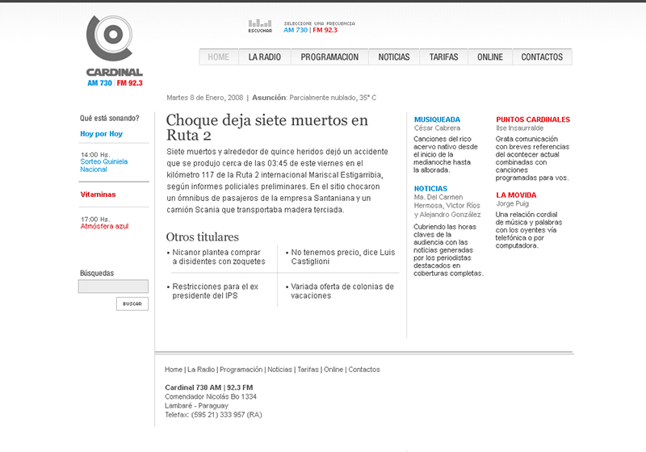
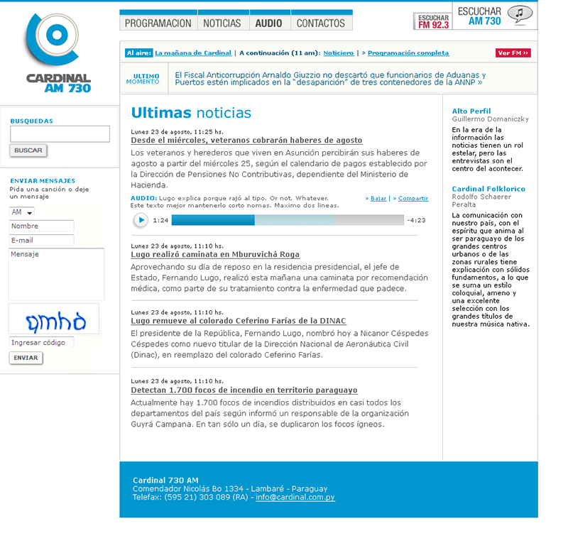

Concepto, diseño y HTML / CSS. Programación: Ronald Abegg.
Este fue el diseño inicial, que todavía es mi favorito. Es sobrio, sencillo y eficaz. Y lindo, espero.
El diseño anterior duró hasta que me pidieron que haga algo más específico para la radio AM y que le agregue más color. Con el tiempo también se sumó la opción de escuchar fragmentos de audio editados por el departamento de prensa. Esta es, con muy pocas modificaciones, la versión actual del sitio.
